Milestone 3 · 用 Elements、Console、Sources、Network 把 click → Faro → /alloy 一層一層證明
/alloy 時它們是不是同一種 telemetry，以及 preflight / POST 分別該看 Headers、Payload 還是 Response。
Lesson 5 已經建立預期資料流：
Browser click
│ Browser dispatches Event
▼
ClickInstrumentation
│ extracts data-* value
▼
Faro click event
│ Transport sends HTTP request
▼
POST /alloyLesson 6 要做的是把每一條箭頭換成 runtime evidence。
如果還不熟悉 DevTools，先讀 四個工作區 bridge，認識 Elements 的 DOM 樹、Console 的查值／訊息、Sources 的程式與停點、Network 的 request table。Network 是工作區；Headers／Payload／Response 是選定 request 後的 detail tabs，不是另外三個工作區。
先問「我要證明什麼」，再選 boundary → evidence → panel → 證明限制；不要從任意 tab 猜答案。本課沿用 Lesson 5 的預期資料流，用實際 evidence 找 first broken boundary。
本課圖例使用 2026-09-16 的 Playwright + CDP capture：主線 DOM value 是 DailySchedule。10:35 Asia/Taipei 保存 DOM／listener／bounded stepping／六筆 Network raw evidence；約 18:00–18:06 補拍真實 Chrome 153 DevTools UI，Network 圖中是另外十三筆。這些不是一個 capture pass，不能合併列數；來源見 Evidence Card。重跑時自行觀察，不預設名稱。
真實截圖用來認 UI；寬圖可在圖框內滑動，摘要則是使用教材共用樣式的 HTML。
① Elements / Console
這個 UI 的 live DOM 到底有沒有 data-link-name？
② Console / Sources
document 有 click listener 嗎？
需要時，click 發生後到底執行了哪段 callback？
③ Network
Browser 有沒有送 /alloy？
哪一筆是 preflight？哪一筆才是 telemetry POST？
如果有多筆 POST，它們內容一樣嗎？
④ Payload / Response
POST 裡有沒有剛才那個 click？
receiver 對這筆 POST 回了什麼？Expected state → observed evidence → first broken boundary。
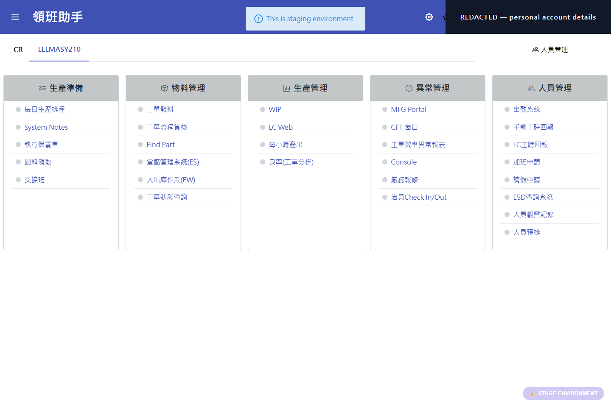
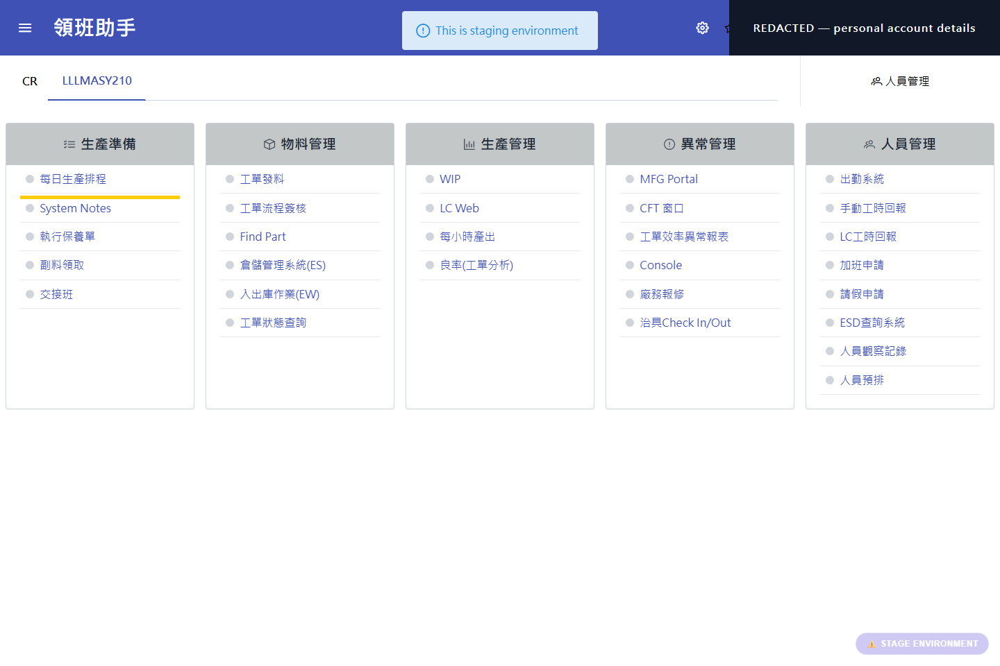
Foreman Assistant source 已驗證主畫面 template 有：
<p-button [attr.data-link-name]="item.subsystem" ...>這只能證明 source 會把 runtime 的 item.subsystem 寫進 data-link-name；實際值仍要看 live DOM。
Source contract：Foreman Assistant host integration。
用 Element Picker 選中你真的看得到的 UI，再到 Console 執行：
$0.tagName
$0.closest('[data-link-name]')
$0.closest('[data-link-name]')?.getAttribute('data-link-name')本課擷取例子實際看到的是：
$0.tagName
→ "SPAN"
$0.closest('[data-link-name]')
→ p-button[data-link-name="DailySchedule"]
getAttribute('data-link-name')
→ "DailySchedule"此次 runtime 的 inner target 與 ancestor 關係由 sanitized DOM evidence 記錄為 SPAN → DIV → BUTTON → P-BUTTON（箭頭表示 parent）。Picker 命中 SPAN、Elements 圖選中外層 P-BUTTON，是不同 selection，不應把 screenshot 的 $0 當作相同 node。
所以這次 runtime evidence 是：
SPAN
│ closest('[data-link-name]') 往 ancestor 找
▼
p-button[data-link-name="DailySchedule"]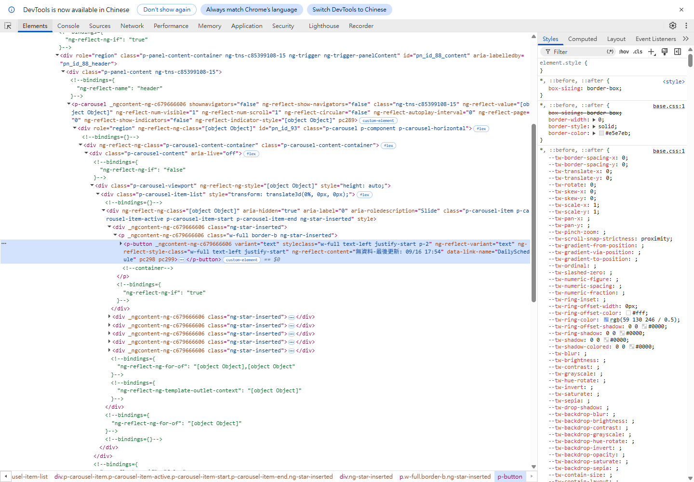
data-link-name="DailySchedule"；底部 breadcrumb 是 ancestor 路徑，右側 Styles 是 CSS。這證明 attribute 所在層，不證明 listener 註冊或 execution。可展開 node 追 children；inner target 不一定是這個 host。Raw DOM：lesson6-dom-runtime.json。
data-link-name 值」。本課擷取例子的值就是 DailySchedule。這是2026-09-16 擷取當時的 runtime observation，不代表所有環境永遠都有同一個名稱。
本次實際 Browser observation：Foreman Assistant Browser DevTools lab evidence。
Console 執行：
getEventListeners(document).clickDevTools 回傳的是「目前註冊在 document 上的 click listeners 清單」。畫面裡會有很多 JavaScript object 細節，但這個 Lab 不需要全部懂。
| 欄位 | Captured runtime value | 為什麼看 |
|---|---|---|
| listener count | 1 | 確認註冊數量；不是 callback invocation 次數。 |
| event type | click | 確認正在查對 event。 |
| useCapture | false | 此 listener 不在 capture phase。 |
| passive | false | 此 registration 未宣告 passive。 |
| once | false | 不是觸發一次就自動移除。 |
| listener function | global callback wrapper；Console 補拍顯示 globalZoneAwareCallback | 識別入口 wrapper，不將它直接叫 Faro。 |
| function location | polyfills.js:969（1-based） | 定位部署中的 registration entry；不是永久行號。 |
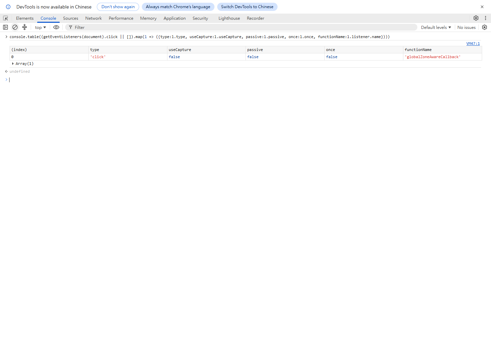
globalZoneAwareCallback。輸入提示列在結果下方。這證明 registration，不證明 Faro 執行；下方 undefined 只是 console.table 的 return value。原始 location 再看本節 CDP 欄位表。Location 是部署 bundle 的 1-based line；source map 可能顯示 zone.js 的另一組行號。Raw：listener evidence。
passive=false 是此 registration 未宣告 passive；once=false 表示不是一次觸發就自動移除。Scopes／Prototype 暫不深入；listener 清單不是 callback execution 歷史。
document 上確實有一個 click listener registration，而且 DevTools 顯示它目前經過 Zone.js wrapper。你還沒有證明這個 wrapper 最後一定呼叫 Faro 的 click callback。
getEventListeners() 看的是「已註冊什麼」。Event Listener Breakpoint 看的是「事件真的發生時，Browser 正在執行什麼」。Chrome 官方對這種 breakpoint 的定義就是：指定事件發生後，在 listener code 執行時暫停。
Chrome DevTools · Event listener breakpoints。
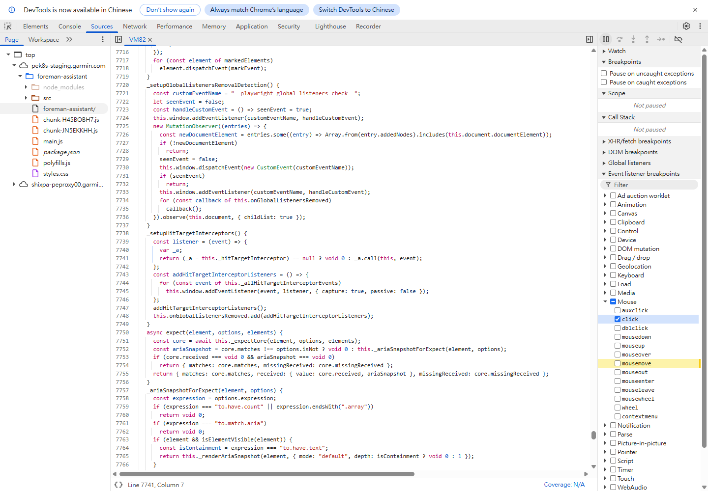
本課 registration evidence 顯示 globalZoneAwareCallback，部署位置是 polyfills.js（source map 可顯示 Zone.js），所以 breakpoint 先停在 Zone.js wrapper 是合理結果。
Browser dispatch click
│ calls registered listener
▼
Zone.js wrapper
│ invokes wrapped callback/task
▼
實際 application / library callback這時主要看 Call Stack，必要時使用 Step into 繼續往真正 callback 走。你要找的不是某個固定行號，而是能辨識 ClickInstrumentation 行為的 evidence，例如：
closest('[data-link-name]')
getAttribute('data-link-name')
pushEvent('click', ...)如果 source map 能直接顯示 faro-click-tracking / clickInstrumentation，那會更容易；如果目前只能看到 Zone.js wrapper、無法追到 Faro callback，就要誠實記成「document click listener 已執行，但尚未把 execution path 證明到 Faro callback」。
停點先讀：pause reason、目前 script／function、黃底 source line、右側 Call Stack。Call Stack 是當下呼叫鏈，不是所有歷史。Step into 嘗試進入下一個函式呼叫；Step over 跑過目前步驟；Resume 繼續執行。Scope 是 frame 當下變數，可能含個資，不要整區分享。
本課 CDP capture 實際 first pause 是 EventListener、globalZoneAwareCallback、polyfills.js:970；有限 120 次 stepInto、125 snapshots 到達：
ClickInstrumentation.handleClick main.js:131710
getTrackedAttributeValue main.js:131697
toPayloadKey main.js:131694
pushEvent main.js:123009這是 automation 已擷取的 execution path，不要求 learner 盲走 120 步。Raw：bounded pause／step evidence；行號只定位當次部署。
clickInstrumentation／this.handleClick；確認 callback 內有 target、tracked-attribute extraction 與 pushEvent 行為，不能只靠檔名。const target = event.target 等可執行入口行左側行號欄點一下，建立 line breakpoint。它是指定 source 位置，不是 click event checkbox。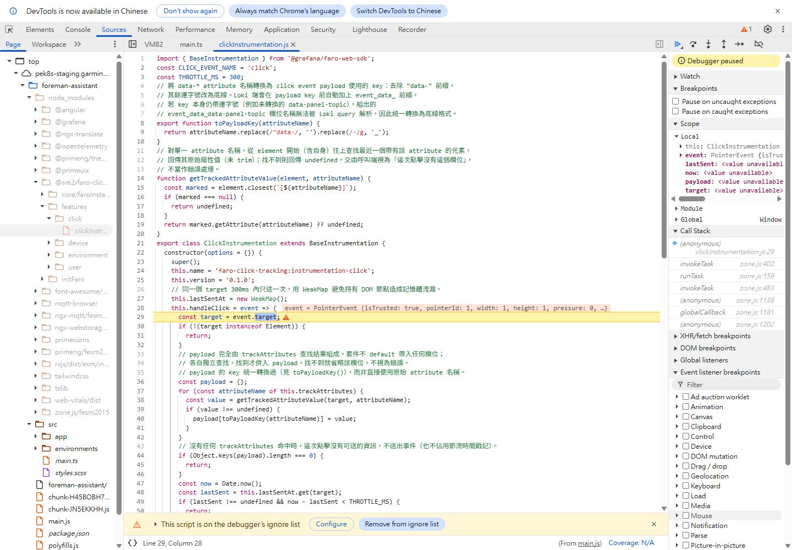
main.js 核對 callback，再設 line breakpoint；中間黃底是 clickInstrumentation.js:29（source map），底部顯示 From main.js；右側 Call Stack 從 callback 接到 invokeTask／runTask／globalZoneAwareCallback。這直接證明 callback 已進入，不證明 HTTP 已送出；這張的 pause reason 是 line breakpoint 的 other，不是原先 EventListener pause。灰色 frames 是 ignore list，不是沒執行。這張 line pause 證明 callback 入口已到達；黃底是尚未執行的下一行，不能因 source 旁邊看得到 closest／getAttribute／pushEvent，就宣稱每行都已執行。extraction／pushEvent 的 execution claim 使用前述 bounded-step raw evidence。
Chrome 官方：breakpoint 類型 · debugger 操作 · line-pause projection。
先確認 Not paused，再回 main 重新確認同一個 live DOM 值；Network Clear → filter alloy → 安全 click 一次。先讀 Method + Type + Status，不是直接翻 Payload。Method 沒顯示時，在 table header 右鍵勾 Method；Waterfall 也可從欄位選單開啟。擷取圖例有兩種不同 request：
| Network row | 角色 | 這堂課主要看哪裡 |
|---|---|---|
Type: preflightMethod: OPTIONSStatus: 204 | Browser 先問 receiver：「接下來這種 cross-origin POST 可以送嗎？」 | Headers。不要期待 Payload；Response body 也通常不是重點。 |
Type: fetchMethod: POSTStatus: 202 | 真正送 Faro telemetry 的 HTTP request。 | Headers + Payload + Status。Response body 有可能是空的。 |
alloy 不代表其中一筆一定是 preflightMethod: OPTIONS。2026-09-21 的 Jeter stage observation 中，頁面與 /alloy 是 same-origin，兩筆 alloy 都是 POST；它們是兩筆 telemetry transport request，不是 OPTIONS + POST。先看 Method，才不會只靠「有兩列」猜角色。
所以不要看到每一列都從 Headers、Payload、Preview、Response 全部翻一次。不同 request 有不同問題。
| 欄位 | 你現在要知道的意思 |
|---|---|
| Name | request 的資源名稱；這裡都是 alloy，所以單靠 Name 分不出是哪一筆。 |
| Status | HTTP status。本課擷取圖例有 preflight 204、POST 202。 |
| Type | 快速分辨 preflight 與真正 fetch。 |
| Initiator | 哪段 runtime code 觸發 request；看到 zone.js 只代表目前顯示的呼叫入口，不等於那筆一定是 click telemetry。 |
| Size | 傳輸大小，不是 telemetry event 數量或完整 payload 大小。 |
| Time | 這筆 request 花多久；目前不是判斷 click 是否正確的主要 evidence。 |
| Waterfall | request 的時間排列與耗時，不是 Alloy downstream 流程，也不取代 payload correlation。 |
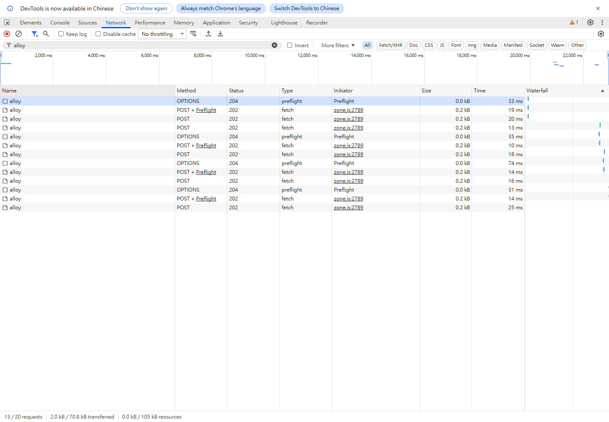
alloy → table 的 Method／Status／Type 先分流；右側 Waterfall 看順序與耗時，不當 click identity。補拍 pass 有 13 列，Time 約 10–74 ms；不是初次的六列 CDP capture。這證明 Browser 記錄到多筆 HTTP 往返，不證明哪列是 click 或下游成功。選 request 的 Name cell 後才顯示 detail tabs：Headers 內的 General 看 URL／Method／Status，Payload 看 request body，Response 看 response body，Timing 看耗時分段。圖中 POST + Preflight 是關聯提示；OPTIONS 本身仍是另一列。
| 你要判斷 | 先選哪種 request / 工具 | 主要看哪裡 |
|---|---|---|
| 這是 preflight 嗎？ | OPTIONS | Method + Type + Status |
| CORS 是否允許？ | OPTIONS + Console | Request / Response Headers |
| 這是 telemetry 嗎？ | POST | General → Payload → Response |
| 多筆 POST 是不是同一種資料？ | 逐筆 POST | Payload 的 top-level signals、events[].name、traces |
| 哪一筆是 click？ | POST | Payload 的 events[] |
| receiver 是否接受？ | matching POST | Status / Response |
| Faro callback 是否執行？ | Event Listener Breakpoint | call frames；不是 Network |
先點 Type = preflight 的那一列。本課擷取圖例顯示：
Request Method: OPTIONS
Status Code: 204 No Content
Request URL: https://shixpa-peproxy00.garmin.com/alloy這一筆主要看 Headers。
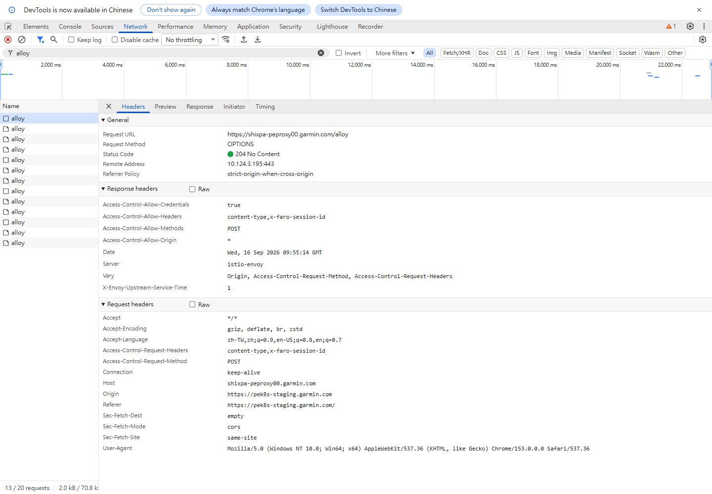
Origin 是誰？
Access-Control-Request-Method 想送什麼 method？
Access-Control-Request-Headers 想帶哪些 headers？Access-Control-Allow-Origin 允許這個 origin 嗎？
Access-Control-Allow-Methods 允許 POST 嗎？
Access-Control-Allow-Headers 允許 Browser 想帶的 headers 嗎？本課擷取例子畫面至少能看到 receiver 回：
Access-Control-Allow-Methods: POST
Access-Control-Allow-Headers: content-type,x-faro-session-id
Access-Control-Allow-Origin: *DevTools 在 Response 顯示：
Failed to load response data
No content available for preflight request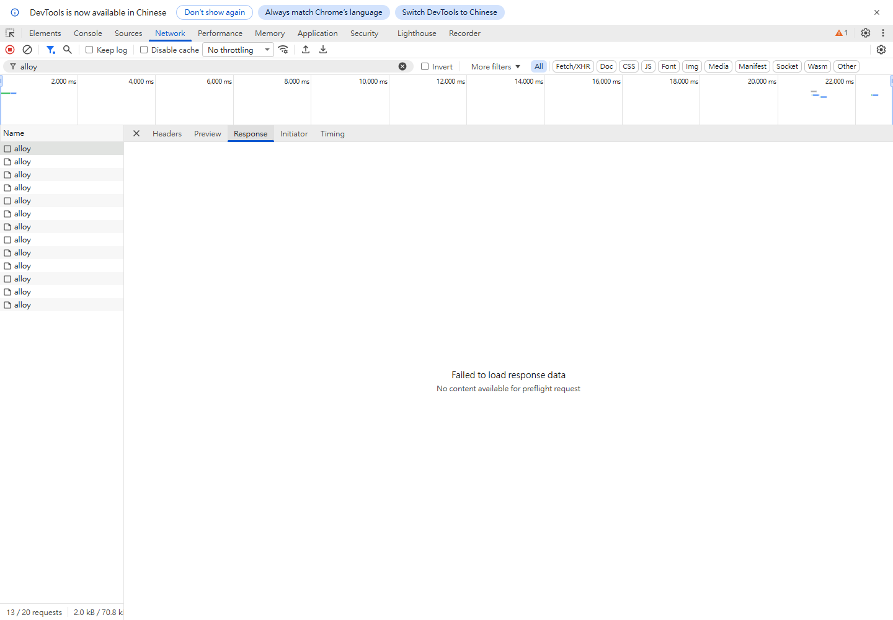
No content available for preflight request；回到同筆 Headers 可見 204。這只表示該 body 無法提供，不是 HTTP failure evidence，也不是 POST 成功 evidence。OPTIONS 優先讀 Headers，不追這個 body。在擷取的這筆 204 No Content preflight 裡，這不是「request 壞掉」的證據。204 本來就表示沒有 response body；對 preflight，真正要看的就是 status 與 CORS response headers。
這次還觀察到 Access-Control-Allow-Credentials: true；header 組合需連同實際 request credential mode 判讀，不能說它適用所有 mode。preflight 可能被快取，所以重跑沒看到新的 OPTIONS 不等於失敗；要看 Console CORS error 與實際 POST，而不是假定每次一定有兩列。
接著點 Type = fetch 的 alloy 列。先看 Headers → General：
Request Method: POST
Status Code: 202 Accepted
Request URL: https://shixpa-peproxy00.garmin.com/alloy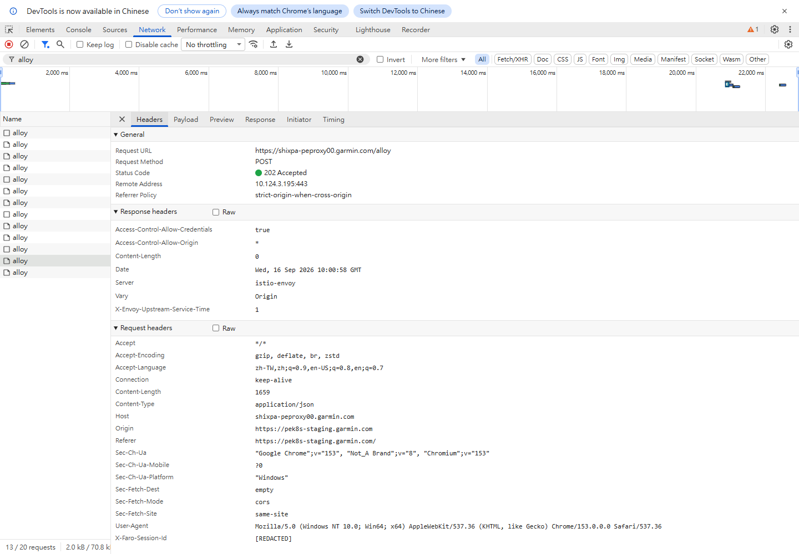
[REDACTED]，不要拿它當 correlation。這證明 receiver HTTP boundary 接受同筆 request，不證明下游處理完成。202 Accepted 可以證明 receiver 在 HTTP boundary 接受了這筆 request。它不能單獨證明 Collector / OpenSearch 已經成功。
因為你現在要回答：
這幾筆 POST 裡，到底哪一筆是剛才那個 DailySchedule click？
做法不是靠 request 順序猜，而是逐筆點 POST 的 Payload，找：
events
└─ name: "click"
└─ attributes
└─ link_name: "DailySchedule"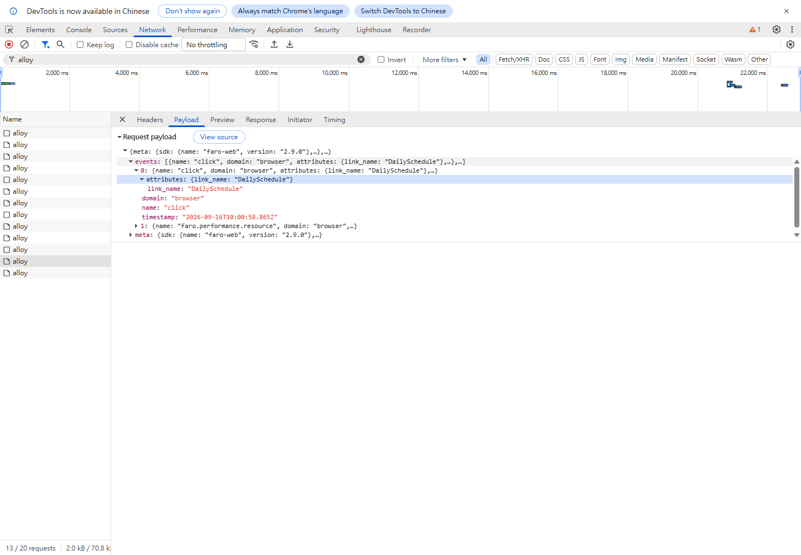
name="click" 與 link_name="DailySchedule"。index 1 還有 resource event，示範一個 request 可批次帶多個 events。這是內容 correlation，不是靠 request 順序；meta 個人物件保持收合，敏感值分享前 redact。本課擷取例子已經找到一筆：
Live DOM
data-link-name="DailySchedule"
│
│ ClickInstrumentation extracts
▼
POST /alloy Payload
events[0].name = "click"
events[0].attributes.link_name = "DailySchedule"
│
▼
HTTP response
202 Accepted本次 runtime evidence：Foreman Assistant Browser DevTools lab evidence。
| Payload 路徑 | 讀它是為了什麼 |
|---|---|
events[].name / attributes | 找 click 與相同 link_name；不能固定只查 index 0。 |
meta.app.name / environment | 是哪個 app、宣告哪個環境；此次 foreman-assistant／tw-prod。 |
meta.page | event 所在頁面，URL 分享前檢查敏感 query。 |
meta.device | device context，不是個人身分。 |
meta.sdk | SDK 版本；此次 faro-web 2.9.0。 |
不要先假設每一筆都是同一個 click，也不要用「我只操作一次」推導「Faro 就只能 POST 一次」。先把兩種 HTTP request 分開：
Business request
GET /api/.../employee/1001
Telemetry transport request
POST /alloy
POST /alloy
...2026-09-21 的 Jeter stage observation 就是一個真實例子：Browser 只發出一次員工 API GET，但兩筆 POST /alloy 的 Payload 不同。
| Jeter POST | Payload 主要內容 | 你目前應該怎麼分類 |
|---|---|---|
| A | events[].name = faro.performance.resource | Browser resource-performance event。 |
| B | events[].name = faro.tracing.fetch + traces.resourceSpans | Tracing event + span telemetry。 |
同一次 GET /employee/1001
│
├─ Browser performance instrumentation
│ └─ faro.performance.resource
│
└─ tracing instrumentation
└─ faro.tracing.fetch + resourceSpans這兩筆 payload 已經足以排除「兩個 POST 是完全相同資料」這個說法。至於 Faro 內部為什麼恰好在那兩個時間點分成兩次 transport send，這組 screenshot 沒有直接證明內部 flush 規則；不要把合理猜測寫成 runtime fact。
/alloy 的四步判讀
/alloy 數量代替 business request 數量。OPTIONS 才是 preflight 候選；POST 是 telemetry transport。events / traces，再看 events[].name。Jeter 的 two-POST runtime evidence 與 downstream classification 保存於 Faro performance resource runtime verification。
POST 的判讀順序：
General
→ URL / Method / Status 對不對？
Payload
→ 裡面是不是我剛才要驗證的 click / telemetry？
Response Headers / Response
→ receiver 對這筆 request 回什麼？本課擷取例子 POST 是 202 Accepted，Response header 還顯示 Content-Length: 0。因此 Response body 空白本身並不奇怪。
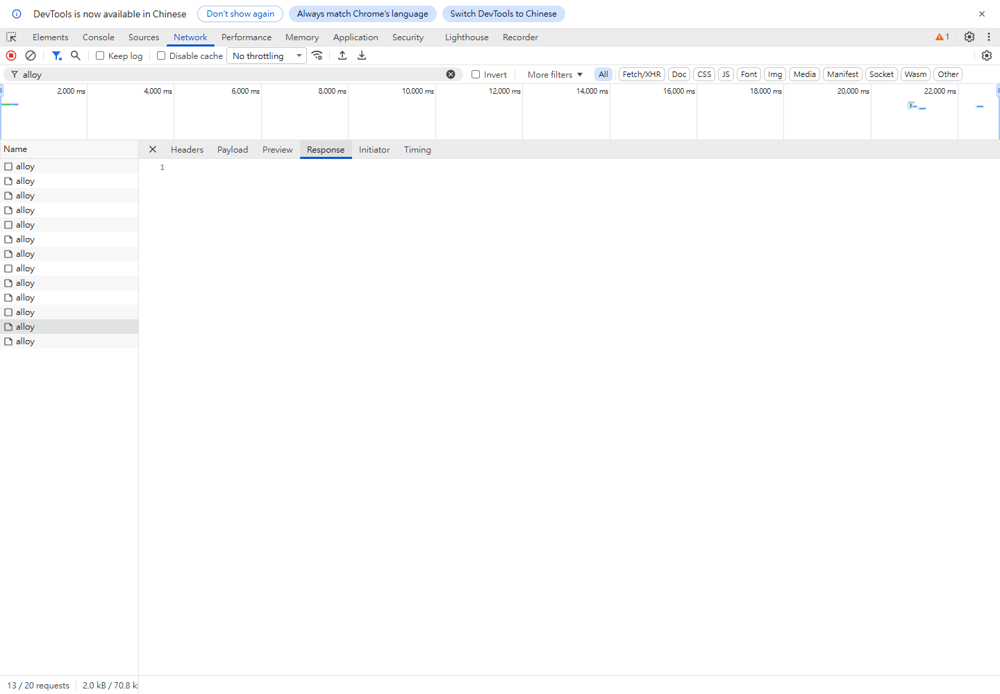
這層能證明：
Browser
│ POST /alloy
│ Payload contains matching telemetry
▼
receiver
│ returns 202
▼
Browser → receiver boundary 有成功 evidence但下一段：
receiver → Alloy pipeline → Collector → storage仍然需要後續 evidence，不能靠 202 直接推論完成。
本課擷取當時的頁面是：
https://pek8s-staging.garmin.com/foreman-assistant/#/main但實際 Faro request 是：
https://shixpa-peproxy00.garmin.com/alloy而 Payload meta 裡的 environment 是：
tw-prod這是本課擷取當時的 runtime observation，不是對你現在頁面的推論。既有 source evidence 也顯示 Foreman 的 src/main.ts 目前傳入 environment: 'tw-prod'，所以 runtime 與 source 在這一點上相符。
Foreman source evidence · 本次 Browser runtime evidence
tw-prod，並送到 prod receiver」。要判斷這是不是 bug，還需要明確的 deployment requirement / intended policy。
| 層級 | 本次可說的話 |
|---|---|
| Observed runtime fact | 頁面 host 是 pek8s-staging.garmin.com；matching POST 送到 https://shixpa-peproxy00.garmin.com/alloy；payload meta.app.environment 是 tw-prod。 |
| Expected from source/config | 既有 source evidence 顯示 Foreman main.ts 傳入 environment: 'tw-prod'，package resolver 將它映射到 prod receiver。 |
| Intended design | 目前沒有 deployment requirement / policy evidence 說 Stage 必須使用哪個 Faro environment。 |
| Bug conclusion | Unknown。觀察到不尋常組合，不等於已證明 bug。 |
先前人工記錄使用 EfficiencyAbnormalReport，wrapper 顯示 zone.js:1201；本課新 capture 主線則使用 DailySchedule 與 deployed bundle locator。這是不同 evidence，不拿新圖替歷史 click 證明。歷史 evidence。
前面逐節建立 mental model 與讀圖方法；以下不重講範例，而是你自己重跑的 checklist。記錄當下實際值，結果可以與圖例不同。
alloy。$0.tagName。$0.closest('[data-link-name]')。$0.closest('[data-link-name]')?.getAttribute('data-link-name')。data-link-name 值」，不要另外發明變數名稱。getEventListeners(document).click。preflight 還是 fetch。events[].name 與是否有 traces。fetch POST。events[].name = "click"。attributes.link_name。link_name 等於剛才 live DOM 讀到的 data-link-name 值，才把這筆 POST 跟剛才 click 關聯起來。Content-Length，不要自動當成失敗。Verified at / Browser / Page URL = ?
DOM:
selected node = ?
data-link-name ancestor = ?
data-link-name value = ?
Listener registration:
document click listener count = ?
type / useCapture / passive / once = ?
listener wrapper/name/location = ?
Listener execution:
breakpoint kind / pause reason / top frames = ?
paused script/function/location = ?
Faro callback path proven = yes / no / not yet
Preflight:
OPTIONS URL = ?
status = ?
Origin / requested method / headers = ?
allow-origin / methods / headers / credentials = ?
Matching POST:
POST URL = ?
status = ?
events[].name = ?
attributes.link_name = ?
是否等於 DOM 的 data-link-name = ?
meta.app.name / environment = ?
Multiple POST classification (if present):
POST count = ?
each POST method = ?
each POST events[].name = ?
each POST contains traces = yes / no
duplicate payload proven = yes / no / not checked
Boundary conclusion:
first broken boundary = ? / none observed through receiver
Unknown / not proven = ?先寫 expected state，再寫 observed deviation；未看到 evidence 可能是 recording、filter、paused state 或 batch 尚未送出，不可直接證明 callback 沒執行。POST 202 而 storage 查不到時，下一步是沿 receiver → pipeline → storage 找證據，不是已排除所有 Browser 問題。
| Evidence | 能證明 | 不能單獨證明 |
|---|---|---|
Live DOM 有 data-link-name | 目前 ancestor path 有可抽取值。 | Faro callback 已執行。 |
getEventListeners() 有 click registration | document 目前有 click listener。 | 該 listener 就是 Faro。 |
| Event Listener Breakpoint + call stack | 事件發生時實際執行路徑。 | 除非 stack/source 能辨識到 Faro，否則仍不能硬說是 Faro。 |
| OPTIONS 204 + CORS headers | 該次 preflight 得到 permission response。 | telemetry POST 成功。 |
| 兩筆 POST 的 Payload signal / event name 不同 | 這兩筆至少不是同一份 payload；可以分別判讀其 telemetry 類型。 | 不能只由此推導 Faro 內部確切 flush 原因。 |
POST Payload 有相同 link_name | 這筆 POST 可跟剛才 tracked click 關聯。 | downstream storage 成功。 |
| Matching POST 202 | Browser → receiver 有 accepted evidence。 | Collector / OpenSearch 已成功。 |
| 觀察 | 可以縮小到哪裡 | 下一個 evidence |
|---|---|---|
| DOM 沒有 attribute | host markup / render boundary | Elements + component source |
| DOM 有值，尚未捕捉到 Faro pause | 先查停點設定／ignore list；execution 尚未證明 | registration + call frames |
| Faro callback 執行，沒有 POST | 先排除 paused／filter／batch／節流，再查 transport／Browser policy | Console + Network |
| 只操作一次，卻有多筆 POST | 先不要判 duplication；先分類 telemetry | Method + Payload signal/event names |
| OPTIONS 失敗 | 可能是連線／receiver／CORS；失敗列本身不足以定因 | OPTIONS headers + Console error |
| POST 非 2xx | receiver HTTP boundary | status / response / receiver logs |
| matching POST 202，storage 查不到 | 該筆已跨 HTTP boundary；接著定位下游，不排除其他 Browser 問題 | Alloy → Collector → storage evidence |
/alloy 的 performance/tracing payload classification 以 2026-09-21 runtime evidence 為準。
getEventListeners(document).click 顯示 globalZoneAwareCallback，最精確的結論是？OPTIONS 204 preflight 最主要應該看哪一區？POST /alloy，怎麼找哪一筆對應剛才的 click？202 Accepted，目前最遠能證明到哪裡？getEventListeners() 只先證明 registration；本課擷取例子看到的是 Zone.js wrapper。OPTIONS 才是 preflight 候選；同一頁面出現兩筆 POST /alloy 不代表其中一筆是 preflight。faro.performance.resource 與 tracing telemetry 兩種不同 payload。data-link-name 與 Payload 的 link_name 對上。tw-prod Faro environment 送到 prod receiver；是否符合 intended policy 另行驗證。如果 Event Listener Breakpoint 下一步停住，把 Sources 畫面 + Call Stack 截圖丟回來，就可以接著判讀那一層是不是 Faro callback。